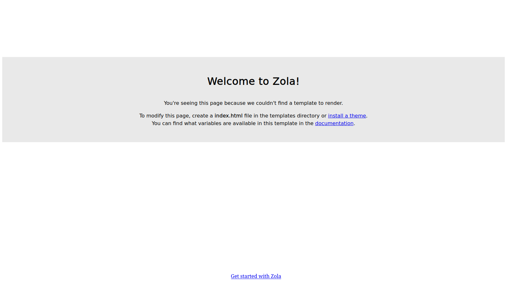

Setting Up Zola On NixOS
9 min read·November 02, 2023·(November 09, 2023)·#Devlog #Linux #NixOS #WebI want a website. I don't need anything fancy, so a static site is fine with me. Plus, static sites come with the benefit of easy hosting and less complexity for me to deal with. Someone recommended me to try out Zola, and after looking into it and playing around, it looks like it does what I need it to.
Zola comes as a single binary, so theoretically I'll be able to build my site far in the future without any difficulty. Their opinionated approach also means that most things I need are built in with no need to include external libraries. Everything else is what you'd expect from a modern platform -- fast build times, live reloading, and quality tooling. Also, it's written in Rust, so it gets bonus points from me.
This first post about Zola will document my experience with setting it up for the first time in order to create the scaffolding for my first personal website.
The plan
For my website I want just a few features to reach my MVP. These are...
- A blog
- An about me page
- Room for other pages
- Hosted and accessible by my domain
Because I have minimal experience with web technologies, to get started I will be using a template. Or, as they are known in Zola, a theme. There are many community themes that I can choose from .
For the hosting, I'm planning on using GitHub Pages since the repository will live on GitHub and the service is free.
Getting started
To get started with Zola I initialize my repository and add my shell.nix file to it:
with import <nixpkgs> {};
mkShell {
buildInputs = [
zola
];
}
Someday I will convert the repository into a Nix flake and make all of the required build inputs explicit. For now, this is the only package that I need added on my machine.
Because I'm using nix-direnv I also initialize my .envrc and activate it with:
Since nix-direnv caches its output in .direnv, I create my .gitignore and add .direnv to it.
After writing, I followed this to change the cache directory to not live in the current directory. Thus, I no longer need to have
.direnvin my.gitignore.
Now I initialize the Zola project with zola init website.
This causes issues later. I would recommend running
zola initon the directory itself, instead.
The output is as follows:
$ zola init website
------------
Welcome to Zola!
Please answer a few questions to get started quickly.
Any choices made can be changed by modifying the `config.toml` file later.
> What is the URL of your site? (https://example.com): <<https://gabrieltb.me><Enter>>
> Do you want to enable Sass compilation? [Y/n]: <<Enter>>
> Do you want to enable syntax highlighting? [y/N]: <<y><Enter>>
> Do you want to build a search index of the content? [y/N]: <<Enter>>
Done! Your site was created in /home/gabe/Coding/website/website
Get started by moving into the directory and using the built-in server: `zola serve`
Visit https://www.getzola.org for the full documentation.
Now the directory structure is:
├── .direnv/...
├── .envrc
├── .git/...
├── .gitignore
├── shell.nix
└── website/
├── config.toml
├── content/
├── sass/
├── static/
├── templates/
└── themes/
This layout causes issues later with deploying to GitHub Pages.
Now I check whether I can serve the website by running
$ zola serve
------------
Building site...
Checking all internal links with anchors.
> Successfully checked 0 internal link(s) with anchors.
-> Creating 0 pages (0 orphan) and 0 sections
Done in 4ms.
Web server is available at http://127.0.0.1:1111
Listening for changes in /home/gabe/Coding/website/website/{config.toml,content,sass,static,templates}
Press Ctrl+C to stop
Visiting the site at localhost:1111 gives me the default Zola page, so everything is in order.
Note that this also causes issues much later. I'd recommend visiting the site at http://127.0.0.1:1111 rather than locahlhost:1111.
Picking a theme
There sure are a lot of themes available! I took my time and looked through every single one of them, partly to find the ones that I like, and partly to gain inspiration. I know that for my blog I would like to implement a two-mode view -- one mode for the whole blog, and one view just for the commands with annotations. I'm still thinking about the best way to go about doing this, but looking at all the themes gave some inspiration. I'm looking at you, codinfox-zola. It was cool seeing all the retro and minimalist themes, as well as the more graphic-design oriented ones.
It hurts to say it, but after painstakingly looking through each and every theme, I've landed on using the very first theme listed on the page, Abridge. I really like how it looks by default and it comes with lots of cool features out of the box. That said, hello-archie was a close runner up for me. Maybe I will end up taking what I like about that theme and incorporating it into my site! For now, let's focus on Abridge to get that MVP.
I'll be installing Abridge as a Git submodule, as this is the recommended approach for deploying on GitHub Pages, which is what I'll be doing after this.
Roughly following the directions, I do:
Next I go in and edit the config.toml to my liking. In particular I change the base_url, online_url, title, and description. I delete the French language section, but only comment out the Spanish section because I might want to translate the site to Spanish at some point. I also uncomment theme = "abridge" so that the theme is actually used.
Running zola serve gives me this blank canvas:
Make sure to commit and push all changes at this point.
Setting up GitHub Pages
Now that I have something to deploy, I might as well set up GitHub Pages. Following the docs, I will use GitHub Actions for my CI. For this I will need to create the GitHub Action and change some settings.
To create the action I just go to the Actions page and click Set up a workflow yourself. Then I paste in the following:
# On every push this script is executed
on: push
name: Build and deploy GH Pages
jobs:
build:
runs-on: ubuntu-latest
if: github.ref == 'refs/heads/main'
steps:
- name: checkout
uses: actions/checkout@v3.0.0
- name: build_and_deploy
uses: shalzz/zola-deploy-action@v0.17.2
env:
# Target branch
PAGES_BRANCH: gh-pages
# Or if publishing to the same repo, use the automatic token
TOKEN: ${{ secrets.GITHUB_TOKEN }}
I commit this to main and the build fails.
This is because the build script expects the root of the repository to house the website files, which is not the case with my directory layout. Not a big deal, I just move everything from website into the parent folder, update my .gitmodules to reflect the new path that the Abridge submodule will live, and push my changes.
Then the build fails again, this time due to insufficient privileges. Going into Settings > Actions > General > Workflow Permissions and changing it to read and write fixes this and the build completes successfully.
Now that the website is being successfully built, I need to deploy it. I go to Settings > Pages and change the deployment branch to gh-pages. This succeeds and I can view my site at https://gabrieldtb.github.io/website/. It doesn't look as expected...
In hindsight I believe the issue stemmed from the site being HTTP so less stuff was accepted/loaded. Though, I'm not really sure.
Not entirely sure why it looks like that, but for now, let's just set up the custom domain.
Custom domain
Still in the Pages settings, under > Custom domain I fill in my domain as gabrieltb.me and hit save. Then I head over to my domain registrar and add four "A" address records. Incidentally, these are:
185.199.108.153
185.199.109.153
185.199.110.153
185.199.111.153
Because a friend reminded me that IPV6 exists, I add the "AAAA" records that point to the site as well:
2606:50c0:8000::153
2606:50c0:8001::153
2606:50c0:8002::153
2606:50c0:8003::153
Then, in my repository, I create static/CNAME that contains just gabrieltb.me. Pushing that change, I await a successful build and deployment. Nothing went wrong, so I visit the site at http://gabrieltb.me and it looks exactly the same. Whatever, I should finish the job and enable HTTPS enforcement since being flagged as insecure looks bad. Still in Pages, I go to enable HTTPS but the option is grayed out. After futzing around, reading some outdated articles, and getting error messages saying that my domain verification failed, the option to enable it is no longer grayed out. Hooray! And with that, the site is no longer mangled. Another hooray!
What's next?
This takes care of the deployment and hosting, and the remaining parts of finishing the MVP have a lot of support with the Abridge theme.
Next up will be editing the style a bit so that my site doesn't look like default Abridge, getting acquainted with how to publish articles and publishing one, and making the layout of my site more personalized.